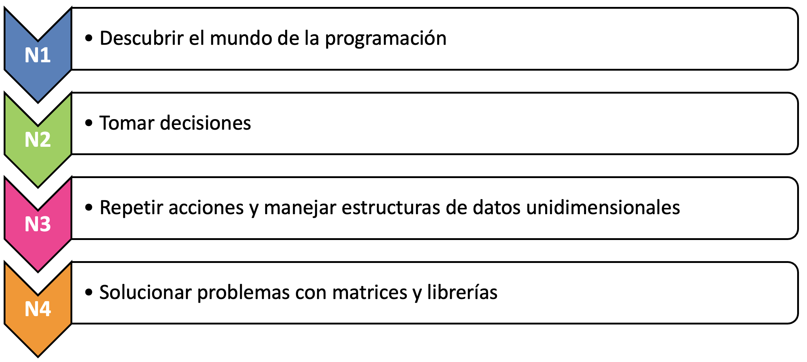
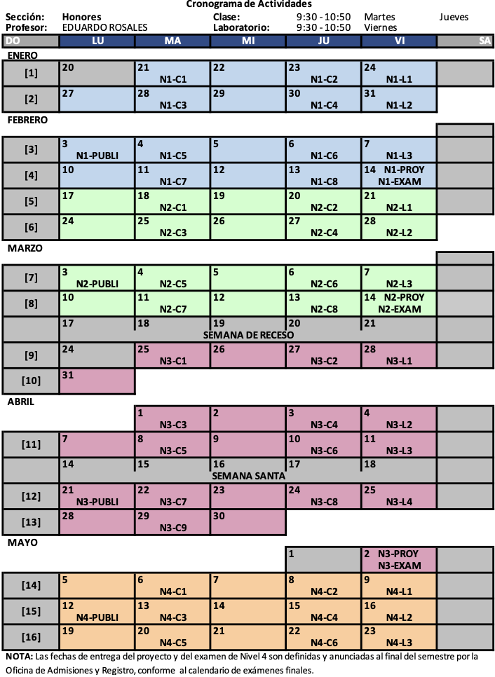

<!DOCTYPE html>
<html lang="en">
  <head>
    <meta charset="utf-8" />
    <meta name="viewport" content="width=device-width, initial-scale=1.0, maximum-scale=1.0, user-scalable=no" />

    <title></title>
    <link rel="stylesheet" href="dist/reveal.css" />
    <link rel="stylesheet" href="dist/theme/iph.css" id="theme" />
    <link rel="stylesheet" href="plugin/highlight/spyder.css" />
	<link rel="stylesheet" href="css/layout.css" />
	<link rel="stylesheet" href="plugin/customcontrols/style.css">


    <script defer src="dist/fontawesome/all.min.js"></script>

	<script type="text/javascript">
		var forgetPop = true;
		function onPopState(event) {
			if(forgetPop){
				forgetPop = false;
			} else {
				parent.postMessage(event.target.location.href, "app://obsidian.md");
			}
        }
		window.onpopstate = onPopState;
		window.onmessage = event => {
			if(event.data == "reload"){
				window.document.location.reload();
			}
			forgetPop = true;
		}

		function fitElements(){
			const itemsToFit = document.getElementsByClassName('fitText');
			for (const item in itemsToFit) {
				if (Object.hasOwnProperty.call(itemsToFit, item)) {
					var element = itemsToFit[item];
					fitElement(element,1, 1000);
					element.classList.remove('fitText');
				}
			}
		}

		function fitElement(element, start, end){

			let size = (end + start) / 2;
			element.style.fontSize = `${size}px`;

			if(Math.abs(start - end) < 1){
				while(element.scrollHeight > element.offsetHeight){
					size--;
					element.style.fontSize = `${size}px`;
				}
				return;
			}

			if(element.scrollHeight > element.offsetHeight){
				fitElement(element, start, size);
			} else {
				fitElement(element, size, end);
			}		
		}


		document.onreadystatechange = () => {
			fitElements();
			if (document.readyState === 'complete') {
				if (window.location.href.indexOf("?export") != -1){
					parent.postMessage(event.target.location.href, "app://obsidian.md");
				}
				if (window.location.href.indexOf("print-pdf") != -1){
					let stateCheck = setInterval(() => {
						clearInterval(stateCheck);
						window.print();
					}, 250);
				}
			}
	};


        </script>
  </head>
  <body>
    <div class="reveal">
      <div class="slides"><section  data-markdown><script type="text/template"><!-- .slide: class="has-light-background drop" data-background-color="#f8f8f8" -->
<div class="" style="position: absolute; left: 0px; top: 0px; height: 700px; width: 960px; min-height: 700px; display: flex; flex-direction: column; align-items: center; justify-content: center" absolute="true">

### <i class="fas fa-award"></i> IP Honores

 ####  *Preguntas Frecuentes*

[Eduardo Rosales](mailto:ee.rosales24@uniandes.edu.co)

Departamento de Ingeniería de Sistemas y Computación

Universidad de los Andes
</div></script></section><section  data-markdown><script type="text/template"><!-- .slide: class="has-light-background drop" data-background-color="#f8f8f8" -->
<div class="" style="position: absolute; left: 0px; top: 0px; height: 700px; width: 960px; min-height: 700px; display: flex; flex-direction: column; align-items: center; justify-content: center" absolute="true">

### Índice (1/8)

- [¿Qué es Introducción a la Programación - IP?](https://eerosales24.github.io/iph_2025_10/general/preguntas_frecuentes/#/9/0/0)
- [¿Cuál es el objetivo del curso?](https://eerosales24.github.io/iph_2025_10/general/preguntas_frecuentes/#/10/0/0)
- [¿Qué se aprende en el curso?](https://eerosales24.github.io/iph_2025_10/general/preguntas_frecuentes/#/11/0/0)
- [¿En qué se diferencia *IP Honores* de *IP regular*?](https://eerosales24.github.io/iph_2025_10/general/preguntas_frecuentes/#/13/0/0)
- [¿Cuáles son las reglas de IP Honores?](https://eerosales24.github.io/iph_2025_10/general/preguntas_frecuentes/#/14/0/0)
- [¿Cuáles son los canales de comunicación del curso?](https://eerosales24.github.io/iph_2025_10/general/preguntas_frecuentes/#/15/0/0)
- [¿Cuál es el correo del profesor del curso?](https://eerosales24.github.io/iph_2025_10/general/preguntas_frecuentes/#/16/0/0)
- [¿Cuál es el horario de atención del profesor?](https://eerosales24.github.io/iph_2025_10/general/preguntas_frecuentes/#/17/0/0)
- [¿Qué puedo hacer si tengo un problema con el profesor?](https://eerosales24.github.io/iph_2025_10/general/preguntas_frecuentes/#/18/0/0)
</div></script></section><section  data-markdown><script type="text/template"><!-- .slide: class="has-light-background drop" data-background-color="#f8f8f8" -->
<div class="" style="position: absolute; left: 0px; top: 0px; height: 700px; width: 960px; min-height: 700px; display: flex; flex-direction: column; align-items: center; justify-content: center" absolute="true">

### Índice (2/8)

- [¿En dónde puedo encontrar el material del curso?](https://eerosales24.github.io/iph_2025_10/general/preguntas_frecuentes/#/19/0/0)
- [¿En dónde puedo encontrar el programa del curso?](https://eerosales24.github.io/iph_2025_10/general/preguntas_frecuentes/#/20/0/0)
- [¿En dónde puedo encontrar la documentación de Python?](https://eerosales24.github.io/iph_2025_10/general/preguntas_frecuentes/#/21/0/0)
- [¿Cuál es la bibliografía del curso?](https://eerosales24.github.io/iph_2025_10/general/preguntas_frecuentes/#/21/0/0)
- [¿Cuáles son las actividades académicas del curso?](https://eerosales24.github.io/iph_2025_10/general/preguntas_frecuentes/#/22/0/0)
- [¿Qué es "Trabajo individual"?](https://eerosales24.github.io/iph_2025_10/general/preguntas_frecuentes/#/38/0/0)
- [¿Qué es Desisoft?](https://eerosales24.github.io/iph_2025_10/general/preguntas_frecuentes/#/40/0/0)
</div></script></section><section  data-markdown><script type="text/template"><!-- .slide: class="has-light-background drop" data-background-color="#f8f8f8" -->
<div class="" style="position: absolute; left: 0px; top: 0px; height: 700px; width: 960px; min-height: 700px; display: flex; flex-direction: column; align-items: center; justify-content: center" absolute="true">

### Índice (3/8)

- [¿Cuál es la dedicación semanal del curso?](https://eerosales24.github.io/iph_2025_10/general/preguntas_frecuentes/#/41/0/0)
- [¿Cuál es el cronograma del curso?](https://eerosales24.github.io/iph_2025_10/general/preguntas_frecuentes/#/42/0/0)
- [¿Cuál es el requisito de asistencia?](https://eerosales24.github.io/iph_2025_10/general/preguntas_frecuentes/#/46/0/0)
	- [¿Cómo justificar una inasistencia?](https://eerosales24.github.io/iph_2025_10/general/preguntas_frecuentes/#/47/0/0)
- [¿Cuál es la distribución de los porcentajes de notas por nivel?](https://eerosales24.github.io/iph_2025_10/general/preguntas_frecuentes/#/48/0/0)
- [¿Cuál es la regla de anulación de proyectos?](https://eerosales24.github.io/iph_2025_10/general/preguntas_frecuentes/#/49/0/0)
- [¿Cuál es la regla de aproximaciones?](https://eerosales24.github.io/iph_2025_10/general/preguntas_frecuentes/#/51/0/0)
- [¿Cuál es la política de notas finales?](https://eerosales24.github.io/iph_2025_10/general/preguntas_frecuentes/#/52/0/0)
- [¿Cuál es la política de retiros?](https://eerosales24.github.io/iph_2025_10/general/preguntas_frecuentes/#/53/0/0)
</div></script></section><section  data-markdown><script type="text/template"><!-- .slide: class="has-light-background drop" data-background-color="#f8f8f8" -->
<div class="" style="position: absolute; left: 0px; top: 0px; height: 700px; width: 960px; min-height: 700px; display: flex; flex-direction: column; align-items: center; justify-content: center" absolute="true">

### Índice (4/8)

- [¿Cómo se entrega un proyecto?](https://eerosales24.github.io/iph_2025_10/general/preguntas_frecuentes/#/54/0/0)
	- [¿Qué pasa si no entrego un proyecto?](https://eerosales24.github.io/iph_2025_10/general/preguntas_frecuentes/#/55/0/0)
- [¿Cómo se entrega un examen?](https://eerosales24.github.io/iph_2025_10/general/preguntas_frecuentes/#/56/0/0)
	- [¿Qué pasa si no entrego el examen?](https://eerosales24.github.io/iph_2025_10/general/preguntas_frecuentes/#/57/0/0)
	- [¿Qué pasa si no voy al examen?](https://eerosales24.github.io/iph_2025_10/general/preguntas_frecuentes/#/58/0/0)
- [¿Qué sucede si (accidentalmente) entrego una respuesta incompleta en un evaluable?](https://eerosales24.github.io/iph_2025_10/general/preguntas_frecuentes/#/59/0/0)
- [¿Existe alguna forma de mejorar la nota de un evaluable?](https://eerosales24.github.io/iph_2025_10/general/preguntas_frecuentes/#/60/0/0)
</div></script></section><section  data-markdown><script type="text/template"><!-- .slide: class="has-light-background drop" data-background-color="#f8f8f8" -->
<div class="" style="position: absolute; left: 0px; top: 0px; height: 700px; width: 960px; min-height: 700px; display: flex; flex-direction: column; align-items: center; justify-content: center" absolute="true">

### Índice (5/8)

- [¿Cuáles son las consecuencias de un presunto fraude en un proyecto?](https://eerosales24.github.io/iph_2025_10/general/preguntas_frecuentes/#/61/0/0)
- [¿Qué es cláusula de arrepentimiento?](https://eerosales24.github.io/iph_2025_10/general/preguntas_frecuentes/#/62/0/0)
- [¿Cuáles son las consecuencias de un presunto fraude en un proyecto, si ya no aplica la cláusula de arrepentimiento?](https://eerosales24.github.io/iph_2025_10/general/preguntas_frecuentes/#/64/0/0)
- [¿Cuáles son las consecuencias de un presunto fraude en un examen?](https://eerosales24.github.io/iph_2025_10/general/preguntas_frecuentes/#/65/0/0)
</div></script></section><section  data-markdown><script type="text/template"><!-- .slide: class="has-light-background drop" data-background-color="#f8f8f8" -->
<div class="" style="position: absolute; left: 0px; top: 0px; height: 700px; width: 960px; min-height: 700px; display: flex; flex-direction: column; align-items: center; justify-content: center" absolute="true">

### Índice (6/8)

- [¿Cómo se publican notas?](https://eerosales24.github.io/iph_2025_10/general/preguntas_frecuentes/#/66/0/0)
- [¿Cuándo se publican notas?](https://eerosales24.github.io/iph_2025_10/general/preguntas_frecuentes/#/67/0/0)
- [¿Cuándo se puede hacer reclamos sobre las notas?](https://eerosales24.github.io/iph_2025_10/general/preguntas_frecuentes/#/68/0/0)
- [¿Cuándo se obtiene respuesta a un reclamo?](https://eerosales24.github.io/iph_2025_10/general/preguntas_frecuentes/#/69/0/0)
- [¿Cómo hacer reclamos sobre la nota de un proyecto?](https://eerosales24.github.io/iph_2025_10/general/preguntas_frecuentes/#/70/0/0)
- [¿Cómo hacer reclamos sobre la nota de un examen o tarea?](https://eerosales24.github.io/iph_2025_10/general/preguntas_frecuentes/#/71/0/0)
</div></script></section><section  data-markdown><script type="text/template"><!-- .slide: class="has-light-background drop" data-background-color="#f8f8f8" -->
<div class="" style="position: absolute; left: 0px; top: 0px; height: 700px; width: 960px; min-height: 700px; display: flex; flex-direction: column; align-items: center; justify-content: center" absolute="true">

### Índice (7/8)

- [¿Cuáles son las funciones de los monitores?](https://eerosales24.github.io/iph_2025_10/general/preguntas_frecuentes/#/72/0/0)
- [¿Cuál es el horario de atención de los monitores?](https://eerosales24.github.io/iph_2025_10/general/preguntas_frecuentes/#/74/0/0)
- [¿Cuáles son los correos de los monitores del curso?](https://eerosales24.github.io/iph_2025_10/general/preguntas_frecuentes/#/75/0/0)
- [¿Qué puedo hacer si tengo un problema con algún monitor?](https://eerosales24.github.io/iph_2025_10/general/preguntas_frecuentes/#/76/0/0)
</div></script></section><section  data-markdown><script type="text/template"><!-- .slide: class="has-light-background drop" data-background-color="#f8f8f8" -->
<div class="" style="position: absolute; left: 0px; top: 0px; height: 700px; width: 960px; min-height: 700px; display: flex; flex-direction: column; align-items: center; justify-content: center" absolute="true">

### Índice (8/8)

- [¿Qué es CupiTaller?](https://eerosales24.github.io/iph_2025_10/general/preguntas_frecuentes/#/77/0/0)
	- [¿Qué es una "tutoría" de CupiTaller?](https://eerosales24.github.io/iph_2025_10/general/preguntas_frecuentes/#/78/0/0)
	
<br>

- Otros:
	- [¿Qué es la política de ajustes razonables?](https://eerosales24.github.io/iph_2025_10/general/preguntas_frecuentes/#/82/0/0)
	- [¿Qué es la política de momentos difíciles?](https://eerosales24.github.io/iph_2025_10/general/preguntas_frecuentes/#/83/0/0)
	- [¿Qué es el protocolo MAAD?](https://eerosales24.github.io/iph_2025_10/general/preguntas_frecuentes/#/84/0/0)
</div></script></section><section  data-markdown><script type="text/template"><!-- .slide: class="has-light-background drop" data-background-color="#f8f8f8" -->
<div class="" style="position: absolute; left: 0px; top: 0px; height: 700px; width: 960px; min-height: 700px; display: flex; flex-direction: column; align-items: center; justify-content: center" absolute="true">

### ¿Qué es Introducción a la Programación - IP?

 - Primer curso de programación de las facultades de:
	 - Ingeniería
	 - Ciencias
	 - Economía
	 
<br>

- IP en cifras: 
  - 41 secciones + **IP Honores**
	  - 31 profesores
	  - ~1050 estudiantes

<br>

 [Índice 1](https://eerosales24.github.io/iph_2025_10/general/preguntas_frecuentes/#/1/0/0)
</div></script></section><section  data-markdown><script type="text/template"><!-- .slide: class="has-light-background drop" data-background-color="#f8f8f8" -->
<div class="" style="position: absolute; left: 0px; top: 0px; height: 700px; width: 960px; min-height: 700px; display: flex; flex-direction: column; align-items: center; justify-content: center" absolute="true">

### ¿Cuál es el objetivo del curso?

- Aprender a programar un computador 
	- Para resolver problemas

 - Para ello, se usará la estrategia *Dividir y Conquistar*
	- Simplificar problemas complejos
		- En partes simples y manejables

<br>

 [Índice 1](https://eerosales24.github.io/iph_2025_10/general/preguntas_frecuentes/#/1/0/0)
</div></script></section><section  data-markdown><script type="text/template"><!-- .slide: class="has-light-background drop" data-background-color="#f8f8f8" -->
<div class="" style="position: absolute; left: 0px; top: 0px; height: 700px; width: 960px; min-height: 700px; display: flex; flex-direction: column; align-items: center; justify-content: center" absolute="true">

### ¿Qué se aprende en el curso? (1/2)

El aprendizaje se divide en **4 niveles**:



</div></script></section><section  data-markdown><script type="text/template"><!-- .slide: class="has-light-background drop" data-background-color="#f8f8f8" -->
<div class="" style="position: absolute; left: 0px; top: 0px; height: 700px; width: 960px; min-height: 700px; display: flex; flex-direction: column; align-items: center; justify-content: center" absolute="true">

### ¿Qué se aprende en el curso? (2/2)

-  A usar: 
	- Documentación
	- Convenciones y 
	- Buenas prácticas de programación<sup id="fn1">1</sup>
- Crear algoritmos claros y correctos
- Documentar, implementar, probar y depurar programas
	
<br>

<p id="footnote"> <sup id="fn1">1</sup>No se requiere experiencia previa en programación </p>

<br>

 [Índice 1](https://eerosales24.github.io/iph_2025_10/general/preguntas_frecuentes/#/1/0/0)
</div></script></section><section  data-markdown><script type="text/template"><!-- .slide: class="has-light-background drop" data-background-color="#f8f8f8" -->
<div class="" style="position: absolute; left: 0px; top: 0px; height: 700px; width: 960px; min-height: 700px; display: flex; flex-direction: column; align-items: center; justify-content: center" absolute="true">

### ¿En qué se diferencia *IP Honores* de *IP regular*?

- Profundización en:
  - Conceptos fundamentales de programación
  - Convenciones y buenas prácticas de programación
- Mayores retos:
  - Proyecto **exclusivo** de la sección
- Evaluación más rigurosa de:
  - Algoritmos **claros y correctos**
  - Documentación y **pruebas rigurosas**
  - **Buenas prácticas obligatorias**

	<br>

- <i class="fas fa-award"></i> El nivel de exigencia en IP Honores 
	- Es **significativamente mayor** a IP regular

<br>

 [Índice 1](https://eerosales24.github.io/iph_2025_10/general/preguntas_frecuentes/#/1/0/0)
</div></script></section><section  data-markdown><script type="text/template"><!-- .slide: class="has-light-background drop" data-background-color="#f8f8f8" -->
<div class="" style="position: absolute; left: 0px; top: 0px; height: 700px; width: 960px; min-height: 700px; display: flex; flex-direction: column; align-items: center; justify-content: center" absolute="true">

### ¿Cuáles son las reglas de IP Honores?

- En clase:
	- Mantener la puerta cerrada <i class="fas fa-door-closed"></i>
	


- En clase o laboratorio:
  - Preguntas en cualquier momento
	  - ✅  Levante la mano
	  
	  <br>
	  
	- ❌  <i class="fas fa-hamburger"></i>
	- ❌  <i class="fas fa-volume-mute"></i>
	- <i class="fas fa-mobile-alt"></i>  Modo "no molestar"
	
<br>

 [Índice 1](https://eerosales24.github.io/iph_2025_10/general/preguntas_frecuentes/#/1/0/0)
</div></script></section><section  data-markdown><script type="text/template"><!-- .slide: class="has-light-background drop" data-background-color="#f8f8f8" -->
<div class="" style="position: absolute; left: 0px; top: 0px; height: 700px; width: 960px; min-height: 700px; display: flex; flex-direction: column; align-items: center; justify-content: center" absolute="true">

### ¿Cuáles son los canales de comunicación del curso?

- [Bloque Neón](https://bloqueneon.uniandes.edu.co/d2l/home)<sup id="fn1">1</sup>
  - LMS (Learning Management System) de la Universidad
  
- [Correo Uniandes](https://correo.uniandes.edu.co/)<sup id="fn1">1</sup>
  - Medio de comunicación oficial de la Universidad de los Andes

<br>

<p id="footnote"> <sup id="fn1">1</sup> Ambos sitios deben revisarse con regularidad </p>

<br>

 [Índice 1](https://eerosales24.github.io/iph_2025_10/general/preguntas_frecuentes/#/1/0/0)
</div></script></section><section  data-markdown><script type="text/template"><!-- .slide: class="has-light-background drop" data-background-color="#f8f8f8" -->
<div class="" style="position: absolute; left: 0px; top: 0px; height: 700px; width: 960px; min-height: 700px; display: flex; flex-direction: column; align-items: center; justify-content: center" absolute="true">

### ¿Cuál es el correo del profesor del curso?
 
- Eduardo Rosales
	- [ee.rosales24@uniandes.edu.co](mailto:ee.rosales24@uniandes.edu.co)
		- Por favor incluya un **asunto muy claro y conciso**
		- Por favor indique el **motivo específico del correo**

<br>

 [Índice 1](https://eerosales24.github.io/iph_2025_10/general/preguntas_frecuentes/#/1/0/0)
</div></script></section><section  data-markdown><script type="text/template"><!-- .slide: class="has-light-background drop" data-background-color="#f8f8f8" -->
<div class="" style="position: absolute; left: 0px; top: 0px; height: 700px; width: 960px; min-height: 700px; display: flex; flex-direction: column; align-items: center; justify-content: center" absolute="true">

### ¿Cuál es el horario de atención del profesor?

- Atención con **cita previa**:
  - [ee.rosales24@uniandes.edu.co](mailto:ee.rosales24@uniandes.edu.co)
	  - Por favor incluya un **asunto muy claro y conciso**
	  - Por favor indique el **motivo específico de la reunión**

<br>

 [Índice 1](https://eerosales24.github.io/iph_2025_10/general/preguntas_frecuentes/#/1/0/0)
</div></script></section><section  data-markdown><script type="text/template"><!-- .slide: class="has-light-background drop" data-background-color="#f8f8f8" -->
<div class="" style="position: absolute; left: 0px; top: 0px; height: 700px; width: 960px; min-height: 700px; display: flex; flex-direction: column; align-items: center; justify-content: center" absolute="true">

### ¿Qué puedo hacer si tengo un problema con el profesor?

  - Notificar a los **coordinadores de pregrado ISIS**:
    - [pregisis@uniandes.edu.co](pregisis@uniandes.edu.co)

<br> 

  - Notificar a su **consejero académico**

<br>

 [Índice 1](https://eerosales24.github.io/iph_2025_10/general/preguntas_frecuentes/#/1/0/0)
</div></script></section><section  data-markdown><script type="text/template"><!-- .slide: class="has-light-background drop" data-background-color="#f8f8f8" -->
<div class="" style="position: absolute; left: 0px; top: 0px; height: 700px; width: 960px; min-height: 700px; display: flex; flex-direction: column; align-items: center; justify-content: center" absolute="true">

###  ¿En dónde puedo encontrar el material del curso?

1. [Diapositivas de IP Honores](https://eerosales24.github.io/iph_2025_10/#)
   - Material **exclusivo** de la sección
	
<br>

2. Material de IP regular en [Bloque Neón](https://bloqueneon.uniandes.edu.co/d2l/home):
    - Presentaciones de cada nivel
    

<br>

 [Índice 2](https://eerosales24.github.io/iph_2025_10/general/preguntas_frecuentes/#/2/0/0)
</div></script></section><section  data-markdown><script type="text/template"><!-- .slide: class="has-light-background drop" data-background-color="#f8f8f8" -->
<div class="" style="position: absolute; left: 0px; top: 0px; height: 700px; width: 960px; min-height: 700px; display: flex; flex-direction: column; align-items: center; justify-content: center" absolute="true">

###  ¿En dónde puedo encontrar el programa del curso?


- [Programa del curso](https://eerosales24.github.io/iph_2025_10/general/programa_2025_10_iph.pdf)

- Es un **deber** del estudiante
	- Leer cuidadosamente el programa

<br>

 [Índice 2](https://eerosales24.github.io/iph_2025_10/general/preguntas_frecuentes/#/2/0/0)
</div></script></section><section  data-markdown><script type="text/template"><!-- .slide: class="has-light-background drop" data-background-color="#f8f8f8" -->
<div class="" style="position: absolute; left: 0px; top: 0px; height: 700px; width: 960px; min-height: 700px; display: flex; flex-direction: column; align-items: center; justify-content: center" absolute="true">

###  ¿Cuál es la  bibliografía del curso?

- [Notas de clase](https://cupi2-ip.github.io/IPBook)

	<br>

- Documentación de Python y librerías:
	- [Python](https://docs.python.org/3/)
	- Para Nivel 4:
		- [Pandas](https://pandas.pydata.org/docs/)
		- [matplotlib](https://matplotlib.org/stable/index.html)
	


- Libros recomendados:
	- *"How to Think Like a Computer Scientist"* en [Interactive Python](https://runestone.academy/ns/books/published/thinkcspy/index.html)
	- *"Introducción a la programación con Python 3"* en [Repositorio UJI](https://repositori.uji.es/items/992c7ee2-fef4-4061-9958-aefe932fd611)


<br>

 [Índice 2](https://eerosales24.github.io/iph_2025_10/general/preguntas_frecuentes/#/2/0/0)
</div></script></section><section  data-markdown><script type="text/template"><!-- .slide: class="has-light-background drop" data-background-color="#f8f8f8" -->
<div class="" style="position: absolute; left: 0px; top: 0px; height: 700px; width: 960px; min-height: 700px; display: flex; flex-direction: column; align-items: center; justify-content: center" absolute="true">

### ¿Cuáles son las actividades académicas del curso?

- [Clase](https://eerosales24.github.io/iph_2025_10/general/preguntas_frecuentes/#/23)
- [Laboratorio](https://eerosales24.github.io/iph_2025_10/general/preguntas_frecuentes/#/24)
- [Tarea](https://eerosales24.github.io/iph_2025_10/general/preguntas_frecuentes/#/25)
- [Proyecto](https://eerosales24.github.io/iph_2025_10/general/preguntas_frecuentes/#/31)
- [Examen](https://eerosales24.github.io/iph_2025_10/general/preguntas_frecuentes/#/32)


	<br>

 [Índice 2](https://eerosales24.github.io/iph_2025_10/general/preguntas_frecuentes/#/2/0/0)
</div></script></section><section  data-markdown><script type="text/template"><!-- .slide: class="has-light-background drop" data-background-color="#f8f8f8" -->
<div class="" style="position: absolute; left: 0px; top: 0px; height: 700px; width: 960px; min-height: 700px; display: flex; flex-direction: column; align-items: center; justify-content: center" absolute="true">

### Clase

- Espacio de enseñanza de los conceptos estudiados en el curso
  - Enfoque teórico y práctico
    - Diapositivas **exclusivas** de la sección con
	    - Teoría
	    - Ejercicios
	    - Preguntas tipo quiz (no evaluables)
- Fechas:
	- Semanales
		- **Martes y jueves, 9:30- 10:50am**
		- **Salón: SD_307**
			- Edificio Santo Domingo

<br>

 [Índice 2](https://eerosales24.github.io/iph_2025_10/general/preguntas_frecuentes/#/2/0/0)
</div></script></section><section  data-markdown><script type="text/template"><!-- .slide: class="has-light-background drop" data-background-color="#f8f8f8" -->
<div class="" style="position: absolute; left: 0px; top: 0px; height: 700px; width: 960px; min-height: 700px; display: flex; flex-direction: column; align-items: center; justify-content: center" absolute="true">

### Laboratorio

- Espacio para practicar los conceptos estudiados en el curso
	- Supervisado por el profesor y los 2 monitores
	
- Fechas:
	- Semanales
		- **Viernes, 9:30- 10:50am**
		- **Laboratorio: ML-109B**
			-  Edificio Mario Laserna
		
- Calificación:
	-  [**Trabajo individual**](https://eerosales24.github.io/iph_2025_10/general/preguntas_frecuentes/#/38)
	- Por defecto, no evaluables
		
	
<br>

- Información adicional más adelante en el curso…

<br>

 [Índice 2](https://eerosales24.github.io/iph_2025_10/general/preguntas_frecuentes/#/2/0/0)
</div></script></section><section  data-markdown><script type="text/template"><!-- .slide: class="has-light-background drop" data-background-color="#f8f8f8" -->
<div class="" style="position: absolute; left: 0px; top: 0px; height: 700px; width: 960px; min-height: 700px; display: flex; flex-direction: column; align-items: center; justify-content: center" absolute="true">

### Tarea

- Actividad práctica evaluable de temática abierta

- Tipos:
	- [Tarea de senecode](https://eerosales24.github.io/iph_2025_10/general/preguntas_frecuentes/#/26)
	- [Bono](https://eerosales24.github.io/iph_2025_10/general/preguntas_frecuentes/#/28)
	- [Tarea de ética](https://eerosales24.github.io/iph_2025_10/general/preguntas_frecuentes/#/29)


<br>

 [Índice 2](https://eerosales24.github.io/iph_2025_10/general/preguntas_frecuentes/#/2/0/0)
</div></script></section><section  data-markdown><script type="text/template"><!-- .slide: class="has-light-background drop" data-background-color="#f8f8f8" -->
<div class="" style="position: absolute; left: 0px; top: 0px; height: 700px; width: 960px; min-height: 700px; display: flex; flex-direction: column; align-items: center; justify-content: center" absolute="true">

###  Tarea en senecode (1/2)

- Fechas:
	- Publicación a estudiantes definida por el profesor
		
- Medio:
	- [senecode](https://senecode.virtual.uniandes.edu.co/)  <sup id="fn1">1</sup>
		- Catálogo de ejercicios de programación
			- Más de 100 ejercicios de programación en Python
				- Divididos por niveles y temas
				- Distintas dificultades
		- Ofrece retroalimentación
			- Soporta múltiples intentos
				- No hay penalidad por el número de intentos


<p id="footnote"> <sup id="fn1">1</sup> Disponible desde la semana 2 o 3</p>
</div></script></section><section  data-markdown><script type="text/template"><!-- .slide: class="has-light-background drop" data-background-color="#f8f8f8" -->
<div class="" style="position: absolute; left: 0px; top: 0px; height: 700px; width: 960px; min-height: 700px; display: flex; flex-direction: column; align-items: center; justify-content: center" absolute="true">

###  Tarea en senecode (2/2)

- Calificación:
	-  [**Trabajo individual**](https://eerosales24.github.io/iph_2025_10/general/preguntas_frecuentes/#/38)
	- [senecode](https://senecode.virtual.uniandes.edu.co/)  soporta **calificación automática**
		- Las notas se exportarán directamente a
			- Bloque Neón  	
			
<br>

- Información adicional más adelante en el curso...


<!-- .element: style="width: 10%; height: 20%" -->

<br>

 [Índice 2](https://eerosales24.github.io/iph_2025_10/general/preguntas_frecuentes/#/2/0/0)
</div></script></section><section  data-markdown><script type="text/template"><!-- .slide: class="has-light-background drop" data-background-color="#f8f8f8" -->
<div class="" style="position: absolute; left: 0px; top: 0px; height: 700px; width: 960px; min-height: 700px; display: flex; flex-direction: column; align-items: center; justify-content: center" absolute="true">

### Bono

- Tarea **opcional** para afianzar el aprendizaje de temas clave del curso

- Fechas:
	- Publicación a estudiantes definida por el profesor
		

- Calificación:
	-  [**Trabajo individual**](https://eerosales24.github.io/iph_2025_10/general/preguntas_frecuentes/#/38)
	- Propuestos **exclusivamente** por el profesor
		- Para **todos** los estudiantes del curso
	  - **100% académicos**
	  - Máximo de **5 puntos** (sobre 100)
		  - Aplicables solo a las notas que el profesor defina

	
<br>

- Información adicional más adelante en el curso...


<br>

 [Índice 2](https://eerosales24.github.io/iph_2025_10/general/preguntas_frecuentes/#/2/0/0)
</div></script></section><section  data-markdown><script type="text/template"><!-- .slide: class="has-light-background drop" data-background-color="#f8f8f8" -->
<div class="" style="position: absolute; left: 0px; top: 0px; height: 700px; width: 960px; min-height: 700px; display: flex; flex-direction: column; align-items: center; justify-content: center" absolute="true">

### Tarea de ética (1/2)

- IP es un curso tipo *Epsilon*
	- Tiene objetivos de formación ética
- Actividades:
  - I. "Carrera de privilegios"
  - II. "Acuerdo mutuo de integridad académica"
  - III. Juego de roles “La palanca”
  - IV. Juego de roles “El fraude académico en la universidad”
	- Es una **Tarea de N4**
</div></script></section><section  data-markdown><script type="text/template"><!-- .slide: class="has-light-background drop" data-background-color="#f8f8f8" -->
<div class="" style="position: absolute; left: 0px; top: 0px; height: 700px; width: 960px; min-height: 700px; display: flex; flex-direction: column; align-items: center; justify-content: center" absolute="true">

### Tarea de ética (2/2)

- Tarea de ética de N4
	- Tarea escrita (se entrega en Word o PDF)

	- Fecha:
		- Publicación a estudiantes definida por el profesor
			
	- Medio y entrega:
		- Bloque Neón
		
	- Calificación:
		- [**Trabajo individual**](https://eerosales24.github.io/iph_2025_10/general/preguntas_frecuentes/#/38)
		- Monitores califican
	

<br>

- Información adicional más adelante en el curso...


<br>

 [Índice 2](https://eerosales24.github.io/iph_2025_10/general/preguntas_frecuentes/#/2/0/0)
</div></script></section><section  data-markdown><script type="text/template"><!-- .slide: class="has-light-background drop" data-background-color="#f8f8f8" -->
<div class="" style="position: absolute; left: 0px; top: 0px; height: 700px; width: 960px; min-height: 700px; display: flex; flex-direction: column; align-items: center; justify-content: center" absolute="true">

### Proyecto

- Actividad práctica evaluable de temática específica
- Fechas:
	- Disponibles en el cronograma de la sección
	- Proyectos de N1 a N3:
		- Preparados y publicados por el profesor
	- Proyecto de Nivel 4:
		- Creado por la Coordinación de IP
- Entrega:
	- Estudiantes envían hasta la fecha límite 
    	- Únicamente por Bloque Neón
- Calificación:
	-  [**Trabajo individual**](https://eerosales24.github.io/iph_2025_10/general/preguntas_frecuentes/#/38)
	- Monitores califican

<br>

- Información adicional más adelante en el curso...


<br>

 [Índice 2](https://eerosales24.github.io/iph_2025_10/general/preguntas_frecuentes/#/2/0/0)
</div></script></section><section  data-markdown><script type="text/template"><!-- .slide: class="has-light-background drop" data-background-color="#f8f8f8" -->
<div class="" style="position: absolute; left: 0px; top: 0px; height: 700px; width: 960px; min-height: 700px; display: flex; flex-direction: column; align-items: center; justify-content: center" absolute="true">

### Examen (1/6)

- Actividad que evalúa la teoría y práctica

- Enunciados desde N1 a N3:
	- Creados por el profesor
		- Puntos prácticos
		- Usan cuestionarios de Bloque Neón
</div></script></section><section  data-markdown><script type="text/template"><!-- .slide: class="has-light-background drop" data-background-color="#f8f8f8" -->
<div class="" style="position: absolute; left: 0px; top: 0px; height: 700px; width: 960px; min-height: 700px; display: flex; flex-direction: column; align-items: center; justify-content: center" absolute="true">

### Examen (2/6)

- Enunciado del examen final (N4):
	- Creado por la Coordinación de IP
		- El mismo para IP e IP Honores
	- 4 a 6 puntos
	- Se crean varios enunciados
		- Puntos prácticos → mayor peso
			- Algoritmia de matrices
		- Usan cuestionarios de Bloque Neón
</div></script></section><section  data-markdown><script type="text/template"><!-- .slide: class="has-light-background drop" data-background-color="#f8f8f8" -->
<div class="" style="position: absolute; left: 0px; top: 0px; height: 700px; width: 960px; min-height: 700px; display: flex; flex-direction: column; align-items: center; justify-content: center" absolute="true">

### Examen (3/6)

- Temas evaluados:
	- Relacionados al proyecto de nivel
		- Extensiones, nuevas funcionalidades
	- No relacionados al proyecto de nivel
		- Ej: Algoritmia de temas del nivel
</div></script></section><section  data-markdown><script type="text/template"><!-- .slide: class="has-light-background drop" data-background-color="#f8f8f8" -->
<div class="" style="position: absolute; left: 0px; top: 0px; height: 700px; width: 960px; min-height: 700px; display: flex; flex-direction: column; align-items: center; justify-content: center" absolute="true">

### Examen (4/6)

- Material de consulta disponible en exámenes<sup id="fn1">1</sup>:
    - Documentación de Python y librerías
	- Presentaciones de IP y de **IP Honores**
	- Proyecto entregado
	- Esqueletos provistos por el profesor
    	- Ej: Carga de datos


<br>
<p id="footnote"> <sup id="fn1">1</sup> Se bloquean <strong>automáticamente</strong> todas las demás páginas Web </p>
</div></script></section><section  data-markdown><script type="text/template"><!-- .slide: class="has-light-background drop" data-background-color="#f8f8f8" -->
<div class="" style="position: absolute; left: 0px; top: 0px; height: 700px; width: 960px; min-height: 700px; display: flex; flex-direction: column; align-items: center; justify-content: center" absolute="true">

### Examen (5/6)

- Fechas:
	- Exámenes de N1 a N3:
		- Disponibles en el [cronograma](https://eerosales24.github.io/iph_2025_10/general/preguntas_frecuentes/#/42) de la sección
	- Examen de N4:
		- Ocurrirá en una fecha en la semana de exámenes finales
			- Establecida por la **Oficina de Admisiones y Registro**
				- ❌  Adelantar/modificar fecha
		
	- Publicación a estudiantes:
		- Hecha por el profesor (Bloque Neón)
	- Entrega:
		- Estudiantes envían hasta la fecha límite
			- Bloque Neón
</div></script></section><section  data-markdown><script type="text/template"><!-- .slide: class="has-light-background drop" data-background-color="#f8f8f8" -->
<div class="" style="position: absolute; left: 0px; top: 0px; height: 700px; width: 960px; min-height: 700px; display: flex; flex-direction: column; align-items: center; justify-content: center" absolute="true">

### Examen (6/6)

- Calificación:
	-  [**Trabajo individual**](https://eerosales24.github.io/iph_2025_10/general/preguntas_frecuentes/#/38)
	- El profesor califica
	- Calificación objetiva:
		- Basada en rúbricas:
			- Algoritmos claros y correctos
			- Buenas prácticas obligatorias
			- Pruebas rigurosas

<br>

- Información adicional más adelante en el curso...


<br>

 [Índice 2](https://eerosales24.github.io/iph_2025_10/general/preguntas_frecuentes/#/2/0/0)
</div></script></section><section  data-markdown><script type="text/template"><!-- .slide: class="has-light-background drop" data-background-color="#f8f8f8" -->
<div class="" style="position: absolute; left: 0px; top: 0px; height: 700px; width: 960px; min-height: 700px; display: flex; flex-direction: column; align-items: center; justify-content: center" absolute="true">

### ¿Qué es  "Trabajo individual"?  (1/2)

- En **tareas y proyectos<sup id="fn1">1</sup>**:
	- Permitido discutir ideas y estrategias 
		- Con otros estudiantes del curso
	- Obligatorio realizar y entregar trabajo de **autoría 100% propia**
		- ❌ Compartir código 
	- Las soluciones deben ser significativamente diferentes (N2, N3 y N4)
	- ❌ Copiar código ajeno (plagio)
		- Incluido código producido por 
			- [*Chatbots* y similares](https://secretariageneral.uniandes.edu.co/images/documents/lineamientos-uso-inteligencia-artificial-generativa-IAG-uniandes.pdf)


<br>
<p id="footnote"> <sup id="fn1">1</sup> Hay detección <strong> automática y masiva</strong> de posible plagio vía <a href="https://eerosales24.github.io/iph_2025_10/general/preguntas_frecuentes/#/40">Desisoft</a> </p>
</div></script></section><section  data-markdown><script type="text/template"><!-- .slide: class="has-light-background drop" data-background-color="#f8f8f8" -->
<div class="" style="position: absolute; left: 0px; top: 0px; height: 700px; width: 960px; min-height: 700px; display: flex; flex-direction: column; align-items: center; justify-content: center" absolute="true">

### ¿Qué es  "Trabajo individual"? (2/2)

- En **exámenes**:
	- Prohibido **todo tipo de colaboración**
	- Obligatorio realizar y entregar trabajo de **autoría 100% propia**
	- ❌Compartir código/respuestas 
	- ❌Copiar material ajeno (plagio)
		- Incluidas respuestas producidas por 
			- [*Chatbots* y similares](https://secretariageneral.uniandes.edu.co/images/documents/lineamientos-uso-inteligencia-artificial-generativa-IAG-uniandes.pdf)


<br>

 [Índice 2](https://eerosales24.github.io/iph_2025_10/general/preguntas_frecuentes/#/2/0/0)
</div></script></section><section  data-markdown><script type="text/template"><!-- .slide: class="has-light-background drop" data-background-color="#f8f8f8" -->
<div class="" style="position: absolute; left: 0px; top: 0px; height: 700px; width: 960px; min-height: 700px; display: flex; flex-direction: column; align-items: center; justify-content: center" absolute="true">

### ¿Qué es Desisoft?

- Software que detecta **automáticamente**
	- Similitudes entre proyectos
	- Considera cada una de las entregas 
		- De **todas** las secciones de IP e IP Honores
- Los profesores **deben**
	- Revisar casos con alta similitud
		- Tomar medidas académicas y/o disciplinarias


<br>

 [Índice 2](https://eerosales24.github.io/iph_2025_10/general/preguntas_frecuentes/#/2/0/0)
</div></script></section><section  data-markdown><script type="text/template"><!-- .slide: class="has-light-background drop" data-background-color="#f8f8f8" -->
<div class="" style="position: absolute; left: 0px; top: 0px; height: 700px; width: 960px; min-height: 700px; display: flex; flex-direction: column; align-items: center; justify-content: center" absolute="true">

### ¿Cuál es la dedicación semanal del curso?

- Dedicación semanal:
	- 2 clases: 
    	- 2h 40
	- 1 laboratorio: 
    	- 1h 20
	- Trabajo extra: 
    	- **5h** <!-- .element: class="fragment highlight-red" -->


<br>

 [Índice 3](https://eerosales24.github.io/iph_2025_10/general/preguntas_frecuentes/#/3/0/0)
</div></script></section><section  data-markdown><script type="text/template"><!-- .slide: class="has-light-background drop" data-background-color="#f8f8f8" -->
<div class="" style="position: absolute; left: 0px; top: 0px; height: 700px; width: 960px; min-height: 700px; display: flex; flex-direction: column; align-items: center; justify-content: center" absolute="true">

### ¿Cuál es el [cronograma del curso](https://eerosales24.github.io/iph_2025_10/general/cronograma_actividades_2025_10_iph.pdf)? (1/4)



</div></script></section><section  data-markdown><script type="text/template"><!-- .slide: class="has-light-background drop" data-background-color="#f8f8f8" -->
<div class="" style="position: absolute; left: 0px; top: 0px; height: 700px; width: 960px; min-height: 700px; display: flex; flex-direction: column; align-items: center; justify-content: center" absolute="true">

### ¿Cuál es el [cronograma del curso](https://eerosales24.github.io/iph_2025_10/general/cronograma_actividades_2025_10_iph.pdf)?  (2/4)

- Contiene fechas de:
	- Clases
	- Laboratorios
	- Festivos y fechas especiales
	- Publicación de proyectos
	- Entrega de proyectos
	- Exámenes:
		- N1, N2 y N3
</div></script></section><section  data-markdown><script type="text/template"><!-- .slide: class="has-light-background drop" data-background-color="#f8f8f8" -->
<div class="" style="position: absolute; left: 0px; top: 0px; height: 700px; width: 960px; min-height: 700px; display: flex; flex-direction: column; align-items: center; justify-content: center" absolute="true">

### ¿Cuál es el [cronograma del curso](https://eerosales24.github.io/iph_2025_10/general/cronograma_actividades_2025_10_iph.pdf)?  (3/4)

- Ejemplo de convenciones para Nivel 1:
	- **N1-C1**:
		- Clase 1 de Nivel 1
	- **N1-L1**:
		- Laboratorio 1 de Nivel 1
	- **N1-PUBLI**:
		- Publicación del proyecto de Nivel 1
</div></script></section><section  data-markdown><script type="text/template"><!-- .slide: class="has-light-background drop" data-background-color="#f8f8f8" -->
<div class="" style="position: absolute; left: 0px; top: 0px; height: 700px; width: 960px; min-height: 700px; display: flex; flex-direction: column; align-items: center; justify-content: center" absolute="true">

### ¿Cuál es el [cronograma del curso](https://eerosales24.github.io/iph_2025_10/general/cronograma_actividades_2025_10_iph.pdf)?  (4/4)

- Ejemplo de convenciones para Nivel 1:
	- **N1-EXAM**:
		- Examen de Nivel 1
	- **N1-PROY**:
		- Entrega del proyecto del Nivel 1
	- **En gris**:
		- Festivos y fechas especiales


<br>

 [Índice 3](https://eerosales24.github.io/iph_2025_10/general/preguntas_frecuentes/#/3/0/0)
</div></script></section><section  data-markdown><script type="text/template"><!-- .slide: class="has-light-background drop" data-background-color="#f8f8f8" -->
<div class="" style="position: absolute; left: 0px; top: 0px; height: 700px; width: 960px; min-height: 700px; display: flex; flex-direction: column; align-items: center; justify-content: center" absolute="true">

### ¿Cuál es el requisito de asistencia?

- Requisito para aprobación del curso
  - Asistencia >= **80%**<!-- .element: class="fragment highlight-red" --><sup id="fn1">1</sup> 
    - Considerando todas las sesiones (clases y laboratorios)
- Profesor lleva **bitácora de asistencia**

	<br>

- [¿Cómo justificar una inasistencia?](https://eerosales24.github.io/iph_2025_10/general/preguntas_frecuentes/#/47)

<br>
<p id="footnote"> <sup id="fn1">1</sup> ART. 43 - <a href="https://secretariageneral.uniandes.edu.co/images/documents/reglamento-pregrado-web-2024.pdf">Reglamento General de Estudiantes de Pregrado</a></p>


<br>

 [Índice 3](https://eerosales24.github.io/iph_2025_10/general/preguntas_frecuentes/#/3/0/0)
</div></script></section><section  data-markdown><script type="text/template"><!-- .slide: class="has-light-background drop" data-background-color="#f8f8f8" -->
<div class="" style="position: absolute; left: 0px; top: 0px; height: 700px; width: 960px; min-height: 700px; display: flex; flex-direction: column; align-items: center; justify-content: center" absolute="true">

### ¿Cómo justificar una inasistencia?

- Se debe presentar una **excusa válida**<sup id="fn1">1</sup> en un plazo de **3 días hábiles**<sup id="fn1">2</sup>
- La excusa es verificada por el **Centro Médico** de la universidad
	- **NO se aceptan incapacidades de médicos particulares**<!-- .element: class="fragment highlight-red" -->
- ❌ Excusas falsificadas
  - Conllevan a apertura de [proceso disciplinario](https://decanaturadeestudiantes.uniandes.edu.co/apoyo/preguntas-frecuentes)

<br>

<p id="footnote"> <sup id="fn1">1</sup> Definición de <a href="https://decanaturadeestudiantes.uniandes.edu.co/incapacidades-medicas">incapacidad médica válida</a></p>
<p id="footnote"> <sup id="fn1">2</sup> ART. 45 - <a href="https://secretariageneral.uniandes.edu.co/images/documents/reglamento-pregrado-web-2024.pdf">Reglamento General de Estudiantes de Pregrado</a></p>


<br>

 [Índice 3](https://eerosales24.github.io/iph_2025_10/general/preguntas_frecuentes/#/3/0/0)
</div></script></section><section  data-markdown><script type="text/template"><!-- .slide: class="has-light-background drop" data-background-color="#f8f8f8" -->
<div class="" style="position: absolute; left: 0px; top: 0px; height: 700px; width: 960px; min-height: 700px; display: flex; flex-direction: column; align-items: center; justify-content: center" absolute="true">

### ¿Cuál es la distribución de los porcentajes de notas por nivel?

<style>
table {
  width: 100%;
  text-align: center;
  font-size: 20px;
  border-collapse: collapse;
}
</style>


<table border="1" style="border-collapse: collapse; width: 100%; text-align: center; font-size: 20px;">
  <thead style="background-color: #d0e6f8;">
    <tr>
      <th style="color: black;"># Sesiones<sup id="fn1">1</sup></th>
      <th style="color: black;">Nivel</th>
      <th style="color: black;">Evaluación</th>
      <th style="color: black;">Tema</th>
      <th style="color: black;">Proyecto</th>
    </tr>
  </thead>
  <tbody>
    <tr style="background-color: #f8f8b8;">
      <td style="color: black;">9</td>
      <td style="color: black;">N1</td>
      <td style="color: black; font-weight: bold;">10%</td>
      <td style="color: black;">Descubrir el mundo de la programación</td>
      <td style="color: black;">1</td>
    </tr>
    <tr style="background-color: #c8f8c8;">
      <td style="color: black;">12</td>
      <td style="color: black;">N2</td>
      <td style="color: black; font-weight: bold;">25%</td>
      <td style="color: black;">Tomar decisiones</td>
      <td style="color: black;">2</td>
    </tr>
    <tr style="background-color: #b8d8f8;">
      <td style="color: black;">15</td>
      <td style="color: black;">N3</td>
      <td style="color: black; font-weight: bold;">35%</td>
      <td style="color: black;">Repetir acciones y manejar estructuras unidimensionales</td>
      <td style="color: black;">3</td>
    </tr>
    <tr style="background-color: #b8c8f8;">
      <td style="color: black;">12</td>
      <td style="color: black;">N4</td>
      <td style="color: black; font-weight: bold;">30%</td>
      <td style="color: black;">Solucionar problemas con matrices y librerías</td>
      <td style="color: black;">4</td>
    </tr>
  </tbody>
</table>

<p id="footnote"> <sup id="fn1">1</sup>El número puede verse afectado a causa de días festivos y fechas especiales</p>


<br>

 [Índice 3](https://eerosales24.github.io/iph_2025_10/general/preguntas_frecuentes/#/3/0/0)
</div></script></section><section  data-markdown><script type="text/template"><!-- .slide: class="has-light-background drop" data-background-color="#f8f8f8" -->
<div class="" style="position: absolute; left: 0px; top: 0px; height: 700px; width: 960px; min-height: 700px; display: flex; flex-direction: column; align-items: center; justify-content: center" absolute="true">

### ¿Cuál es la regla de anulación de proyectos? (1/2)

- En cada nivel, si la **nota obtenida en el examen**
	- Es **menor al  60%** de nota de proyecto
		- **Se anula automáticamente el proyecto** <!-- .element: class="fragment highlight-red" -->
</div></script></section><section  data-markdown><script type="text/template"><!-- .slide: class="has-light-background drop" data-background-color="#f8f8f8" -->
<div class="" style="position: absolute; left: 0px; top: 0px; height: 700px; width: 960px; min-height: 700px; display: flex; flex-direction: column; align-items: center; justify-content: center" absolute="true">

### ¿Cuál es la regla de anulación de proyectos? (2/2)

- La anulación de un proyecto, implica que su porcentaje 
	- Se redistribuye<sup id="fn1">1</sup></th> así:
	
<table border="1" style="border-collapse: collapse; width: 80%; text-align: center; font-size: 20px;">
  <thead style="background-color: #d0e6f8">
    <tr>
      <td style="background-color: #f8f8f8"></td>
      <td style="background-color: #f8f8f8"></td>
      <th style="color: black;">Proyecto</th>
      <th style="color: black;">Examen</th>
      <th style="color: black;">Tareas</th>
    </tr>
  </thead>
  <tbody>
    <tr>
      <td style="background-color: #d0e6f8; color: black;" rowspan="2"><strong>N1</strong> (10%)</td>
      <td>Sin anular</td>
      <td>4%</td>
      <td>5%</td>
      <td rowspan="2">1%</td>
    </tr>
    <tr style="background-color: #d3d3d3;">
      <td style="color: black;"><em>Anulado</em></td>
      <td style="color: black;"><strong>0%</strong></td>
      <td style="color: black;"><strong>9%</strong></td>
    </tr>
    <tr>
      <td style="background-color: #d0e6f8; color: black;" rowspan="2"><strong>N2</strong> (25%)</td>
      <td>Sin anular</td>
      <td>5%</td>
      <td>17%</td>
      <td rowspan="2">3%</td>
    </tr>
    <tr style="background-color: #d3d3d3;">
      <td style="color: black;"><em>Anulado</em></td>
      <td style="color: black;"><strong>0%</strong></td>
      <td style="color: black;"><strong>22%</strong></td>
    </tr>
    <tr>
      <td style="background-color: #d0e6f8; color: black;" rowspan="2"><strong>N3</strong> (35%)</td>
      <td>Sin anular</td>
      <td>6%</td>
      <td>25%</td>
      <td rowspan="2">4%</td>
    </tr>
    <tr style="background-color: #d3d3d3;">
      <td style="color: black;"><em>Anulado</em></td>
      <td style="color: black;"><strong>0%</strong></td>
      <td style="color: black;"><strong>31%</strong></td>
    </tr>
    <tr>
      <td style="background-color: #d0e6f8; color: black;" rowspan="2"><strong>N4</strong> (30%)</td>
      <td>Sin anular</td>
      <td>5%</td>
      <td>23%</td>
      <td rowspan="2">2%</td>
    </tr>
    <tr style="background-color: #d3d3d3;">
      <td style="color: black;"><em>Anulado</em></td>
      <td style="color: black;"><strong>0%</strong></td>
      <td style="color: black;"><strong>28%</strong></td>
    </tr>
  </tbody>
</table>

<p id="footnote"> <sup id="fn1">1</sup> No hay excepciones a esta regla</p>


<br>

 [Índice 3](https://eerosales24.github.io/iph_2025_10/general/preguntas_frecuentes/#/3/0/0)
</div></script></section><section  data-markdown><script type="text/template"><!-- .slide: class="has-light-background drop" data-background-color="#f8f8f8" -->
<div class="" style="position: absolute; left: 0px; top: 0px; height: 700px; width: 960px; min-height: 700px; display: flex; flex-direction: column; align-items: center; justify-content: center" absolute="true">

### ¿Cuál es la regla de aproximaciones?

- Las notas del curso se aproximan<sup id="fn1">1</sup> así:

<table border="1" style="border-collapse: collapse; width: 100%; text-align: center; font-size: 20px;">
  <thead style="background-color: #d0e6f8;">
    <tr>
      <th style="color: black;">Rango de nota</th>
      <th style="color: black;">Nota aproximada</th>
    </tr>
  </thead>
  <tbody>
    <tr>
      <td>De 0.0 a 1.74</td>
      <td>1.5</td>
    </tr>
    <tr style="background-color: #d3d3d3;">
      <td style="color: black;">De 1.75 a 2.24</td>
      <td style="color: black;">2.0</td>
    </tr>
    <tr>
      <td>De 2.25 a 2.99</td>
      <td>2.5</td>
    </tr>
    <tr style="background-color: #d3d3d3;">
      <td style="color: black;">De 3.0 a 3.24</td>
      <td style="color: black;">3.0</td>
    </tr>
    <tr>
      <td>De 3.25 a 3.74</td>
      <td>3.5</td>
    </tr>
    <tr style="background-color: #d3d3d3;">
      <td style="color: black;">De 3.75 a 4.24</td>
      <td style="color: black;">4.0</td>
    </tr>
    <tr>
      <td>De 4.25 a 4.74</td>
      <td>4.5</td>
    </tr>
    <tr style="background-color: #d3d3d3; font-weight: bold;">
      <td style="color: black;">De 4.75 a 5.0</td>
      <td style="color: black;">5.0</td>
    </tr>
  </tbody>
</table>

<p id="footnote"> <sup id="fn1">1</sup>No hay excepciones a esta regla</p>


<br>

 [Índice 3](https://eerosales24.github.io/iph_2025_10/general/preguntas_frecuentes/#/3/0/0)
</div></script></section><section  data-markdown><script type="text/template"><!-- .slide: class="has-light-background drop" data-background-color="#f8f8f8" -->
<div class="" style="position: absolute; left: 0px; top: 0px; height: 700px; width: 960px; min-height: 700px; display: flex; flex-direction: column; align-items: center; justify-content: center" absolute="true">

### ¿Cuál es la política de notas finales?

  - Caso regular<sup id="fn1">1</sup>:
	- Se calcula automáticamente en Bloque Neón
		- Aplica la [regla de aproximaciones](https://eerosales24.github.io/iph_2025_10/general/preguntas_frecuentes/#/51)
		
	<br>

  - Caso de pérdida por inasistencia ([asistencia total < 80%](https://eerosales24.github.io/iph_2025_10/general/preguntas_frecuentes/#/46))
    - La nota final será el **menor valor entre 2.5 y la nota real**
		- Aplica la [regla de aproximaciones](https://eerosales24.github.io/iph_2025_10/general/preguntas_frecuentes/#/51)

<br>

<p id="footnote"> <sup id="fn1">1</sup> La única excepción es la nota de "Pendiente" y "Pendiente disciplinario" </p> 


<br>

 [Índice 3](https://eerosales24.github.io/iph_2025_10/general/preguntas_frecuentes/#/3/0/0)
</div></script></section><section  data-markdown><script type="text/template"><!-- .slide: class="has-light-background drop" data-background-color="#f8f8f8" -->
<div class="" style="position: absolute; left: 0px; top: 0px; height: 700px; width: 960px; min-height: 700px; display: flex; flex-direction: column; align-items: center; justify-content: center" absolute="true">

### ¿Cuál es la política de retiros?

  - El **Consejo Académico** de la universidad dictaminó:
	  - Hasta semana 11 (cursos de 16 semanas)
		  - 2 semanas después de entrega de notas parciales

		
		<br>

  - A **marzo 28**
	  - Se habrá entregado mínimo el **30%**
		  - De la nota del curso
		  
	<br>
	
- El estudiante es el **único responsable** <!-- .element: class="fragment highlight-red" --> de tomar la decisión de retirar


<br>

 [Índice 3](https://eerosales24.github.io/iph_2025_10/general/preguntas_frecuentes/#/3/0/0)
</div></script></section><section  data-markdown><script type="text/template"><!-- .slide: class="has-light-background drop" data-background-color="#f8f8f8" -->
<div class="" style="position: absolute; left: 0px; top: 0px; height: 700px; width: 960px; min-height: 700px; display: flex; flex-direction: column; align-items: center; justify-content: center" absolute="true">

###  ¿Cómo se entrega un proyecto?

  - A través de Bloque Neón
    - Instrucciones en el enunciado del proyecto
- Se practicará el proceso con antelación


<br>

 [Índice 4](https://eerosales24.github.io/iph_2025_10/general/preguntas_frecuentes/#/4/0/0)
</div></script></section><section  data-markdown><script type="text/template"><!-- .slide: class="has-light-background drop" data-background-color="#f8f8f8" -->
<div class="" style="position: absolute; left: 0px; top: 0px; height: 700px; width: 960px; min-height: 700px; display: flex; flex-direction: column; align-items: center; justify-content: center" absolute="true">

###  ¿Qué pasa si no entrego un proyecto?

  - La entrega se puede hacer hasta la fecha y hora establecida en Bloque Neón
    - **No hay excepciones a esta regla** <!-- .element: class="fragment highlight-red" -->
      - **No se admiten entregas posteriores**
	      - **Ni usando un medio distinto a Bloque Neón**
  - La calificación de un proyecto no entregado, vacío o que no se puede abrir es **0.0** 


<br>

 [Índice 4](https://eerosales24.github.io/iph_2025_10/general/preguntas_frecuentes/#/4/0/0)
</div></script></section><section  data-markdown><script type="text/template"><!-- .slide: class="has-light-background drop" data-background-color="#f8f8f8" -->
<div class="" style="position: absolute; left: 0px; top: 0px; height: 700px; width: 960px; min-height: 700px; display: flex; flex-direction: column; align-items: center; justify-content: center" absolute="true">

###  ¿Cómo se entrega un examen?

  - A través de Bloque Neón
	  - Hasta la hora límite allí configurada


<br>

- Información adicional más adelante en el curso...

<br>

 [Índice 4](https://eerosales24.github.io/iph_2025_10/general/preguntas_frecuentes/#/4/0/0)
</div></script></section><section  data-markdown><script type="text/template"><!-- .slide: class="has-light-background drop" data-background-color="#f8f8f8" -->
<div class="" style="position: absolute; left: 0px; top: 0px; height: 700px; width: 960px; min-height: 700px; display: flex; flex-direction: column; align-items: center; justify-content: center" absolute="true">

### ¿Qué pasa si no entrego el examen?

  - La entrega se pueden hacer hasta la fecha y hora establecida en Bloque Neón
    - **No hay excepciones a esta regla** <!-- .element: class="fragment highlight-red" -->
      - **No se admiten entregas posteriores**
	      - **Ni usando un medio distinto a Bloque Neón**
  - La calificación de un examen no entregado es **0.0**


<br>

 [Índice 4](https://eerosales24.github.io/iph_2025_10/general/preguntas_frecuentes/#/4/0/0)
</div></script></section><section  data-markdown><script type="text/template"><!-- .slide: class="has-light-background drop" data-background-color="#f8f8f8" -->
<div class="" style="position: absolute; left: 0px; top: 0px; height: 700px; width: 960px; min-height: 700px; display: flex; flex-direction: column; align-items: center; justify-content: center" absolute="true">

### ¿Qué pasa si no voy al examen?

  - **Ausencia justificada**
    - Presentar la justificación al profesor en **máximo 3 días hábiles**
      - Se programará un supletorio
  
  - **Ausencia no justificada**
    - La calificación de un examen no entregado es **0.0** <!-- .element: class="fragment highlight-red" -->

<br>

 [Índice 4](https://eerosales24.github.io/iph_2025_10/general/preguntas_frecuentes/#/4/0/0)
</div></script></section><section  data-markdown><script type="text/template"><!-- .slide: class="has-light-background drop" data-background-color="#f8f8f8" -->
<div class="" style="position: absolute; left: 0px; top: 0px; height: 700px; width: 960px; min-height: 700px; display: flex; flex-direction: column; align-items: center; justify-content: center" absolute="true">

### - ¿Qué sucede si (accidentalmente) entrego una respuesta incompleta en un evaluable?

  - Se califica **únicamente** el contenido que haya sido enviado
	  - Mediante el medio establecido (Ej: Bloque Neón, senecode, entrega impresa)
		  - Hasta la fecha y hora límite
	 - **No hay excepciones** <!-- .element: class="fragment highlight-red" -->
	      - **No se admiten entregas posteriores**
		      - **Ni usando un medio distinto al establecido**

<br>

 [Índice 4](https://eerosales24.github.io/iph_2025_10/general/preguntas_frecuentes/#/4/0/0)
</div></script></section><section  data-markdown><script type="text/template"><!-- .slide: class="has-light-background drop" data-background-color="#f8f8f8" -->
<div class="" style="position: absolute; left: 0px; top: 0px; height: 700px; width: 960px; min-height: 700px; display: flex; flex-direction: column; align-items: center; justify-content: center" absolute="true">

### ¿Existe alguna forma de mejorar la nota de un evaluable?

  - No se definen "*trabajos adicionales*" para un estudiante específico

	<br>

  - [Bono](https://eerosales24.github.io/iph_2025_10/general/preguntas_frecuentes/#/28)

<br>

 [Índice 4](https://eerosales24.github.io/iph_2025_10/general/preguntas_frecuentes/#/4/0/0)
</div></script></section><section  data-markdown><script type="text/template"><!-- .slide: class="has-light-background drop" data-background-color="#f8f8f8" -->
<div class="" style="position: absolute; left: 0px; top: 0px; height: 700px; width: 960px; min-height: 700px; display: flex; flex-direction: column; align-items: center; justify-content: center" absolute="true">

### ¿Cuáles son las consecuencias de un presunto fraude en un proyecto?

- [Si aplica la cláusula de arrepentimiento](https://eerosales24.github.io/iph_2025_10/general/preguntas_frecuentes/#/62)
- [Si no aplica](https://eerosales24.github.io/iph_2025_10/general/preguntas_frecuentes/#/64)


<br>

 [Índice 5](https://eerosales24.github.io/iph_2025_10/general/preguntas_frecuentes/#/5/0/0)
</div></script></section><section  data-markdown><script type="text/template"><!-- .slide: class="has-light-background drop" data-background-color="#f8f8f8" -->
<div class="" style="position: absolute; left: 0px; top: 0px; height: 700px; width: 960px; min-height: 700px; display: flex; flex-direction: column; align-items: center; justify-content: center" absolute="true">

### ¿Qué es cláusula de arrepentimiento? (1/2)

- Aplica si la entrega de un proyecto no 100% original 
	- Se reporta **voluntariamente por el estudiante dentro de 72 horas** <!-- .element: class="fragment highlight-red" -->
- La nota asignada al proyecto será de cero (**0.0**)
	- **Sin afectar otras notas**
	
	
	
- **Ventaja:**
	- No se impondrán sanciones disciplinarias
</div></script></section><section  data-markdown><script type="text/template"><!-- .slide: class="has-light-background drop" data-background-color="#f8f8f8" -->
<div class="" style="position: absolute; left: 0px; top: 0px; height: 700px; width: 960px; min-height: 700px; display: flex; flex-direction: column; align-items: center; justify-content: center" absolute="true">

### ¿Qué es cláusula de arrepentimiento?  (2/2)

- Válida sólo **UNA** vez

- En reincidencia:
	-  **Nota de cero (0.0) en el nivel** <!-- .element: class="fragment highlight-red" -->
		- Además, el profesor puede iniciar un [proceso disciplinario](https://decanaturadeestudiantes.uniandes.edu.co/apoyo/preguntas-frecuentes)


<br>

 [Índice 5](https://eerosales24.github.io/iph_2025_10/general/preguntas_frecuentes/#/5/0/0)
</div></script></section><section  data-markdown><script type="text/template"><!-- .slide: class="has-light-background drop" data-background-color="#f8f8f8" -->
<div class="" style="position: absolute; left: 0px; top: 0px; height: 700px; width: 960px; min-height: 700px; display: flex; flex-direction: column; align-items: center; justify-content: center" absolute="true">

### ¿Cuáles son las consecuencias de un presunto fraude en un proyecto, si ya no aplica la cláusula de arrepentimiento?

- Caso por defecto:
	- **Nota de cero (0.0) en el nivel** <!-- .element: class="fragment highlight-red" -->
		- Si no está de acuerdo
			- Puede defenderse en un [proceso disciplinario](https://decanaturadeestudiantes.uniandes.edu.co/apoyo/preguntas-frecuentes)


- Casos graves (Ej: reincidencia):
	- Apertura de proceso disciplinario <!-- .element: class="fragment highlight-red" -->
		- Incluyendo a todos los estudiantes involucrados
			
	
<br>

 [Índice 5](https://eerosales24.github.io/iph_2025_10/general/preguntas_frecuentes/#/5/0/0)
</div></script></section><section  data-markdown><script type="text/template"><!-- .slide: class="has-light-background drop" data-background-color="#f8f8f8" -->
<div class="" style="position: absolute; left: 0px; top: 0px; height: 700px; width: 960px; min-height: 700px; display: flex; flex-direction: column; align-items: center; justify-content: center" absolute="true">

### ¿Cuáles son las consecuencias de un presunto fraude en un examen?

  - No aplica la cláusula de arrepentimiento
  
  
  
  - Se procede a la **apertura inmediata** <!-- .element: class="fragment highlight-red" --> de un [proceso disciplinario](https://decanaturadeestudiantes.uniandes.edu.co/apoyo/preguntas-frecuentes) 


<br>

 [Índice 5](https://eerosales24.github.io/iph_2025_10/general/preguntas_frecuentes/#/5/0/0)
</div></script></section><section  data-markdown><script type="text/template"><!-- .slide: class="has-light-background drop" data-background-color="#f8f8f8" -->
<div class="" style="position: absolute; left: 0px; top: 0px; height: 700px; width: 960px; min-height: 700px; display: flex; flex-direction: column; align-items: center; justify-content: center" absolute="true">

### ¿Cómo se publican notas?

  - En Bloque Neón
	  - En una plantilla de calificaciones
  - El proceso se informa mediante un correo electrónico
  
  <br>
  
- Información adicional más adelante en el curso...


<br>

 [Índice 6](https://eerosales24.github.io/iph_2025_10/general/preguntas_frecuentes/#/6/0/0)
</div></script></section><section  data-markdown><script type="text/template"><!-- .slide: class="has-light-background drop" data-background-color="#f8f8f8" -->
<div class="" style="position: absolute; left: 0px; top: 0px; height: 700px; width: 960px; min-height: 700px; display: flex; flex-direction: column; align-items: center; justify-content: center" absolute="true">

### ¿Cuándo se publican notas?

  - A más tardar en **10 días hábiles** siguientes a la evaluación<sup id="fn1">1</sup>
  
<br>

<p id="footnote"> <sup id="fn1">1</sup> ART. 64 - <a href="https://secretariageneral.uniandes.edu.co/images/documents/reglamento-pregrado-web-2024.pdf">Reglamento General de Estudiantes de Pregrado</a></p>


<br>

 [Índice 6](https://eerosales24.github.io/iph_2025_10/general/preguntas_frecuentes/#/6/0/0)
</div></script></section><section  data-markdown><script type="text/template"><!-- .slide: class="has-light-background drop" data-background-color="#f8f8f8" -->
<div class="" style="position: absolute; left: 0px; top: 0px; height: 700px; width: 960px; min-height: 700px; display: flex; flex-direction: column; align-items: center; justify-content: center" absolute="true">

###  ¿Cuándo se puede hacer reclamos sobre las notas?

  - El plazo máximo para reclamos es **4 días hábiles**
	  - Después de la entrega de notas<sup id="fn1">1</sup>

<br>

<p id="footnote"> <sup id="fn1">1</sup> ART. 64 - <a href="https://secretariageneral.uniandes.edu.co/images/documents/reglamento-pregrado-web-2024.pdf">Reglamento General de Estudiantes de Pregrado</a></p>

<br>

 [Índice 6](https://eerosales24.github.io/iph_2025_10/general/preguntas_frecuentes/#/6/0/0)
</div></script></section><section  data-markdown><script type="text/template"><!-- .slide: class="has-light-background drop" data-background-color="#f8f8f8" -->
<div class="" style="position: absolute; left: 0px; top: 0px; height: 700px; width: 960px; min-height: 700px; display: flex; flex-direction: column; align-items: center; justify-content: center" absolute="true">

###  ¿Cuándo se obtiene respuesta a un reclamo?

  - El profesor cuenta con **5 días hábiles** para responder a un reclamo<sup id="fn1">1</sup>
<br>

<p id="footnote"> <sup id="fn1">1</sup> ART. 64 - <a href="https://secretariageneral.uniandes.edu.co/images/documents/reglamento-pregrado-web-2024.pdf">Reglamento General de Estudiantes de Pregrado</a></p>


<br>

 [Índice 6](https://eerosales24.github.io/iph_2025_10/general/preguntas_frecuentes/#/6/0/0)
</div></script></section><section  data-markdown><script type="text/template"><!-- .slide: class="has-light-background drop" data-background-color="#f8f8f8" -->
<div class="" style="position: absolute; left: 0px; top: 0px; height: 700px; width: 960px; min-height: 700px; display: flex; flex-direction: column; align-items: center; justify-content: center" absolute="true">

### ¿Cómo hacer reclamos sobre la nota de un proyecto?

- Correo a: [ee.rosales24@uniandes.edu.co](mailto:ee.rosales24@uniandes.edu.co)
	- **Con copia al monitor que lo calificó**
	- Por favor incluya un asunto **claro y conciso**
	- Por favor justifique **muy claramente** el motivo de su reclamo
    	- Ej: Justifique cómo su solución es correcta 
	    	- Tal que no le aplique una penalidad específica

<br>

 [Índice 6](https://eerosales24.github.io/iph_2025_10/general/preguntas_frecuentes/#/6/0/0)
</div></script></section><section  data-markdown><script type="text/template"><!-- .slide: class="has-light-background drop" data-background-color="#f8f8f8" -->
<div class="" style="position: absolute; left: 0px; top: 0px; height: 700px; width: 960px; min-height: 700px; display: flex; flex-direction: column; align-items: center; justify-content: center" absolute="true">

### ¿Cómo hacer reclamos sobre la nota de un examen o tarea?

- Correo a: [ee.rosales24@uniandes.edu.co](mailto:ee.rosales24@uniandes.edu.co)
	- Por favor incluya un asunto **claro y conciso**
	- Por favor justifique **muy claramente** el motivo de su reclamo
		- Ej: Justifique cómo su solución es correcta 
	    	- Tal que no le aplique una penalidad específica

<br>

 [Índice 6](https://eerosales24.github.io/iph_2025_10/general/preguntas_frecuentes/#/6/0/0)
</div></script></section><section  data-markdown><script type="text/template"><!-- .slide: class="has-light-background drop" data-background-color="#f8f8f8" -->
<div class="" style="position: absolute; left: 0px; top: 0px; height: 700px; width: 960px; min-height: 700px; display: flex; flex-direction: column; align-items: center; justify-content: center" absolute="true">

### ¿Cuáles son las funciones de los monitores? (1/2)

- Los dos monitores de IP Honores:
	- Califican:
	  - Proyectos
	  - Actividad de ética (Tarea de N4)
	- Responden:
		- Reclamos sobre sus calificaciones
		- Dudas en los laboratorios
	- Vigilan los exámenes:
	  - Reportando al profesor casos de presunto fraude
</div></script></section><section  data-markdown><script type="text/template"><!-- .slide: class="has-light-background drop" data-background-color="#f8f8f8" -->
<div class="" style="position: absolute; left: 0px; top: 0px; height: 700px; width: 960px; min-height: 700px; display: flex; flex-direction: column; align-items: center; justify-content: center" absolute="true">

### ¿Cuáles son las funciones de los monitores? (2/2)

- Los dos monitores de IP Honores:
  - **No responden dudas en exámenes**<!-- .element: class="fragment highlight-red" -->, excepto las relacionadas a:
    - Problemas del PC, configuraciones ó
	    - Ambigüedades/errores en el enunciado
  - **No** ofrecen ningún tipo de monitoria/tutoría extra
    - A excepción de las [tutorías en CupiTaller](https://eerosales24.github.io/iph_2025_10/general/preguntas_frecuentes/#/77)
	    - Solo en las semanas antes de exámenes
  - **No** dictan sesiones de clase
  - **No** califican, ni dan retroalimentación de exámenes
  - **No** comparten ni atienden consultas en sus redes sociales

<br>

 [Índice 7](https://eerosales24.github.io/iph_2025_10/general/preguntas_frecuentes/#/7/0/0)
</div></script></section><section  data-markdown><script type="text/template"><!-- .slide: class="has-light-background drop" data-background-color="#f8f8f8" -->
<div class="" style="position: absolute; left: 0px; top: 0px; height: 700px; width: 960px; min-height: 700px; display: flex; flex-direction: column; align-items: center; justify-content: center" absolute="true">

### ¿Cuál es el horario de atención de los monitores?

  - Principalmente, durante las sesiones de laboratorio
  - Si es un asunto _urgente_
    - Por correo y **SIEMPRE con copia al profesor**<sup id="fn1">1</sup>

<br>

<p id="footnote"> <sup id="fn1">1</sup> Si no se pone en copia al profesor, <strong>el monitor no responderá</strong> </p>

<br>

 [Índice 7](https://eerosales24.github.io/iph_2025_10/general/preguntas_frecuentes/#/7/0/0)
</div></script></section><section  data-markdown><script type="text/template"><!-- .slide: class="has-light-background drop" data-background-color="#f8f8f8" -->
<div class="" style="position: absolute; left: 0px; top: 0px; height: 700px; width: 960px; min-height: 700px; display: flex; flex-direction: column; align-items: center; justify-content: center" absolute="true">

### ¿Cuáles son los correos de los monitores del curso?
  
- [Diego Munevar](mailto:d.munevar@uniandes.edu.co)
- [Joshua Ross](mailto:j.ross@uniandes.edu.co)

	<br>

- Al contactar a un monitor por correo
	- **SIEMPRE coloque en copia al profesor**<sup id="fn1">1</sup>

<br>

<p id="footnote"> <sup id="fn1">1</sup> Si no se pone en copia al profesor, <strong>el monitor no responderá</strong> </p>

<br>

 [Índice 7](https://eerosales24.github.io/iph_2025_10/general/preguntas_frecuentes/#/7/0/0)
</div></script></section><section  data-markdown><script type="text/template"><!-- .slide: class="has-light-background drop" data-background-color="#f8f8f8" -->
<div class="" style="position: absolute; left: 0px; top: 0px; height: 700px; width: 960px; min-height: 700px; display: flex; flex-direction: column; align-items: center; justify-content: center" absolute="true">

### ¿Qué puedo hacer si tengo un problema con algún monitor?

  - [Notificar al profesor](https://eerosales24.github.io/iph_2025_10/general/preguntas_frecuentes/#/16)


<br>

 [Índice 7](https://eerosales24.github.io/iph_2025_10/general/preguntas_frecuentes/#/7/0/0)
</div></script></section><section  data-markdown><script type="text/template"><!-- .slide: class="has-light-background drop" data-background-color="#f8f8f8" -->
<div class="" style="position: absolute; left: 0px; top: 0px; height: 700px; width: 960px; min-height: 700px; display: flex; flex-direction: column; align-items: center; justify-content: center" absolute="true">

### ¿Qué es CupiTaller?

- Ofrece *tutorías* personalizadas y gratuitas
	- Tutorías agendadas vía [Bookeau](https://cupitaller.bookeau.com/#/login)
    	- **Recibirá una invitación vía email**


- **Notas importantes:** <!-- .element: class="fragment highlight-red" -->
	- Los tutores de IP regular
		- No dictan tutorías para los estudiantes de IP Honores
	- Las tutorías de IP Honores se llevarán a cabo 
		- **Únicamente** durante la semana anterior 
			- A la entrega de un proyecto de nivel


<br>

- Información adicional más adelante en el curso...


<br>

 [Índice 8](https://eerosales24.github.io/iph_2025_10/general/preguntas_frecuentes/#/8/0/0)
</div></script></section><section  data-markdown><script type="text/template"><!-- .slide: class="has-light-background drop" data-background-color="#f8f8f8" -->
<div class="" style="position: absolute; left: 0px; top: 0px; height: 700px; width: 960px; min-height: 700px; display: flex; flex-direction: column; align-items: center; justify-content: center" absolute="true">

### ¿Qué es una "tutoría" de CupiTaller? (1/4)

- Sesión de trabajo
  - Estudiante y tutor
- **Objetivo**: Mejorar las capacidades del estudiantes para
  - Analizar un problema
  - Entender sus requerimientos
  - Planear un algoritmo
  - Escribir un programa y probarlo
</div></script></section><section  data-markdown><script type="text/template"><!-- .slide: class="has-light-background drop" data-background-color="#f8f8f8" -->
<div class="" style="position: absolute; left: 0px; top: 0px; height: 700px; width: 960px; min-height: 700px; display: flex; flex-direction: column; align-items: center; justify-content: center" absolute="true">

### ¿Qué es una "tutoría" de CupiTaller? (2/4)

- Una tutoría **NO REEMPLAZA**:
	- Clases teóricas
	- Sesiones de laboratorio
	- Atención a estudiantes por parte del profesor
</div></script></section><section  data-markdown><script type="text/template"><!-- .slide: class="has-light-background drop" data-background-color="#f8f8f8" -->
<div class="" style="position: absolute; left: 0px; top: 0px; height: 700px; width: 960px; min-height: 700px; display: flex; flex-direction: column; align-items: center; justify-content: center" absolute="true">

### ¿Qué es una "tutoría" de CupiTaller? (3/4)

- En una tutoría **NO SE PUEDE**:
	- ❌ Usar el tiempo de la tutoría para realizar actividades no autorizadas
	- ❌ Solicitar que el tutor le solucione el proyecto del nivel o tarea 
  	-  ❌ Solicitar que el tutor le explique una solución ya desarrollada
	- ❌ Intentar usar la tutoría como un reemplazo a una
    	- Clase teórica ó
    	- Sesión de laboratorio
</div></script></section><section  data-markdown><script type="text/template"><!-- .slide: class="has-light-background drop" data-background-color="#f8f8f8" -->
<div class="" style="position: absolute; left: 0px; top: 0px; height: 700px; width: 960px; min-height: 700px; display: flex; flex-direction: column; align-items: center; justify-content: center" absolute="true">

### ¿Qué es una "tutoría" de CupiTaller? (4/4)

- En una tutoría **NO SE PUEDE**:
	- ❌ Solicitar soluciones a problemas técnicos del computador
	- ❌ Hacer uso del celular o medios de distracción
	- ❌ Solicitar la validación/re-calificación de un evaluable

<br>

 [Índice 8](https://eerosales24.github.io/iph_2025_10/general/preguntas_frecuentes/#/8/0/0)
</div></script></section><section  data-markdown><script type="text/template"><!-- .slide: class="has-light-background drop" data-background-color="#f8f8f8" -->
<div class="" style="position: absolute; left: 0px; top: 0px; height: 700px; width: 960px; min-height: 700px; display: flex; flex-direction: column; align-items: center; justify-content: center" absolute="true">

### ¿Qué es la política de [ajustes razonables](https://decanaturadeestudiantes.uniandes.edu.co/diversidad/solicitud-de-ajuste-razonable)?

- Aplica a estudiantes que tienen una **discapacidad**
- El estudiante hace la solicitud
- Ajustes posibles:
	- Tiempo adicional para evaluaciones
	- Cambio al formato de evaluación
	- Cambio de metodología de enseñanza
	- Apoyo extra de un monitor o el profesor


<br>

 [Índice 8](https://eerosales24.github.io/iph_2025_10/general/preguntas_frecuentes/#/8/0/0)
</div></script></section><section  data-markdown><script type="text/template"><!-- .slide: class="has-light-background drop" data-background-color="#f8f8f8" -->
<div class="" style="position: absolute; left: 0px; top: 0px; height: 700px; width: 960px; min-height: 700px; display: flex; flex-direction: column; align-items: center; justify-content: center" absolute="true">

### ¿Qué es la [política de momentos difíciles](https://decanaturadeestudiantes.uniandes.edu.co/diversidad/solicitud-de-ajuste-razonable)?

- Aplica a estudiantes que atraviesan una **situación problemática temporal**
- El profesor evalúa cada caso y llega a un acuerdo con el estudiante
	- Facilitar al estudiante cumplir con sus deberes académicos
	- Priorizando su bienestar


<br>

 [Índice 8](https://eerosales24.github.io/iph_2025_10/general/preguntas_frecuentes/#/8/0/0)
</div></script></section><section  data-markdown><script type="text/template"><!-- .slide: class="has-light-background drop" data-background-color="#f8f8f8" -->
<div class="" style="position: absolute; left: 0px; top: 0px; height: 700px; width: 960px; min-height: 700px; display: flex; flex-direction: column; align-items: center; justify-content: center" absolute="true">

### ¿Qué es el [protocolo MAAD](https://uniandes.edu.co/sites/default/files/asset/document/preguntas-frecuentes-maad.pdf)? (1/2)

- Protocolo para casos de **Maltrato, Acoso, Amenaza y Discriminación** -  MAAD
- Objetivos:
	- Apoyo emocional, médico y jurídico
	- Medidas preventivas
	- Orientación sobre manejo del caso
	- Vinculación a políticas institucionales o legales
- Abarca:
	- Incidentes dentro y fuera del campus
    	- Y en plataformas tecnológicas
</div></script></section><section  data-markdown><script type="text/template"><!-- .slide: class="has-light-background drop" data-background-color="#f8f8f8" -->
<div class="" style="position: absolute; left: 0px; top: 0px; height: 700px; width: 960px; min-height: 700px; display: flex; flex-direction: column; align-items: center; justify-content: center" absolute="true">

### ¿Qué es el [protocolo MAAD](https://uniandes.edu.co/sites/default/files/asset/document/preguntas-frecuentes-maad.pdf)? (2/2)

- Reporte en emergencias:
	- Línea de emergencia **3394949 Ext. 0000**
	- Teléfonos rojos en campus
- Reporte no inmediato:
	- Línea MAAD (lineamaad@uniandes.edu.co)
	- [Decanatura de Estudiantes](https://decanaturadeestudiantes.uniandes.edu.co/)
	- [Ombudsperson](https://ombudsperson.uniandes.edu.co/maad/ruta-de-atencion)
	- [Red de Estudiantes (no estás solx)](https://noestassolo.virtual.uniandes.edu.co/)

<br>
<br>


 [Índice 8](https://eerosales24.github.io/iph_2025_10/general/preguntas_frecuentes/#/8/0/0)

<br>

 [<i class="fas fa-home  fa-3x"></i>](https://eerosales24.github.io/iph_2025_10/#)
</div></script></section></div>
    </div>

    <script src="dist/reveal.js"></script>

    <script src="plugin/markdown/markdown.js"></script>
    <script src="plugin/highlight/highlight.js"></script>
    <script src="plugin/zoom/zoom.js"></script>
    <script src="plugin/notes/notes.js"></script>
    <script src="plugin/math/math.js"></script>
	<script src="plugin/mermaid/mermaid.js"></script>
	<script src="plugin/chart/chart.min.js"></script>
	<script src="plugin/chart/plugin.js"></script>
	<script src="plugin/customcontrols/plugin.js"></script>

    <script>
      function extend() {
        var target = {};
        for (var i = 0; i < arguments.length; i++) {
          var source = arguments[i];
          for (var key in source) {
            if (source.hasOwnProperty(key)) {
              target[key] = source[key];
            }
          }
        }
        return target;
      }

	  function isLight(color) {
		let hex = color.replace('#', '');

		// convert #fff => #ffffff
		if(hex.length == 3){
			hex = `${hex[0]}${hex[0]}${hex[1]}${hex[1]}${hex[2]}${hex[2]}`;
		}

		const c_r = parseInt(hex.substr(0, 2), 16);
		const c_g = parseInt(hex.substr(2, 2), 16);
		const c_b = parseInt(hex.substr(4, 2), 16);
		const brightness = ((c_r * 299) + (c_g * 587) + (c_b * 114)) / 1000;
		return brightness > 155;
	}

	var bgColor = getComputedStyle(document.documentElement).getPropertyValue('--r-background-color').trim();
	var isLight = isLight(bgColor);

	if(isLight){
		document.body.classList.add('has-light-background');
	} else {
		document.body.classList.add('has-dark-background');
	}

      // default options to init reveal.js
      var defaultOptions = {
        controls: true,
        progress: true,
        history: true,
        center: true,
        transition: 'default', // none/fade/slide/convex/concave/zoom
        plugins: [
          RevealMarkdown,
          RevealHighlight,
          RevealZoom,
          RevealNotes,
          RevealMath.MathJax3,
		  RevealMermaid,
		  RevealChart,
		  RevealCustomControls,
        ],


    	allottedTime: 120 * 1000,

		mathjax3: {
			mathjax: 'plugin/math/mathjax/tex-mml-chtml.js',
		},
		markdown: {
		  gfm: true,
		  mangle: true,
		  pedantic: false,
		  smartLists: false,
		  smartypants: false,
		},

		mermaid: {
			theme: isLight ? 'default' : 'dark',
		},

		customcontrols: {
			controls: [
			]
		},
      };

      // options from URL query string
      var queryOptions = Reveal().getQueryHash() || {};

      var options = extend(defaultOptions, {"width":960,"height":700,"margin":"0.025","minScale":"0.1","maxScale":"2.0","controls":"true","controlsLayout":"bottom-right","progress":"true","slideNumber":"true","center":"false","transition":"slide","transitionSpeed":"default"}, queryOptions);
    </script>

    <script>
      Reveal.initialize(options);
    </script>
  </body>

  <!-- created with Advanced Slides -->
</html>
